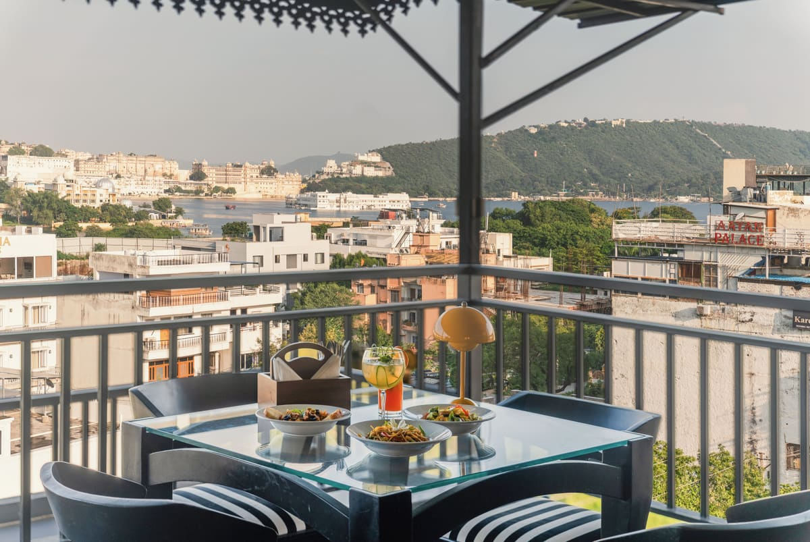
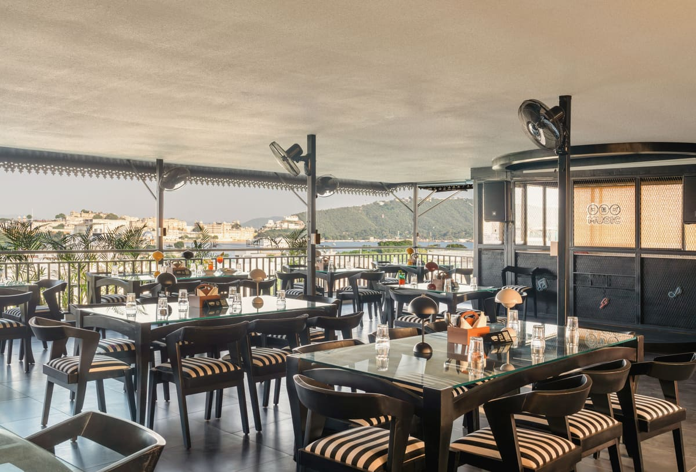
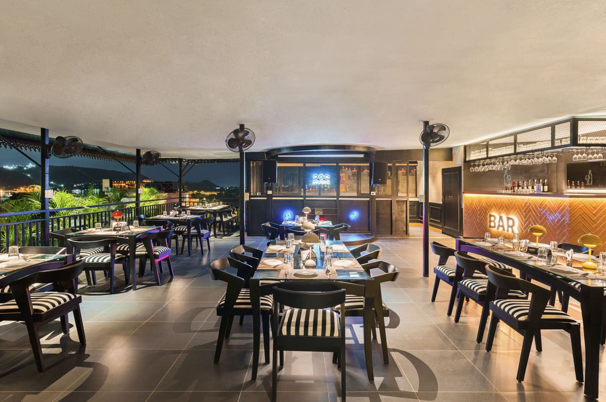
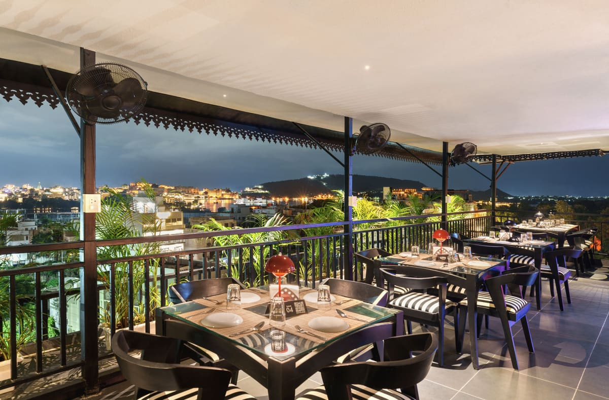
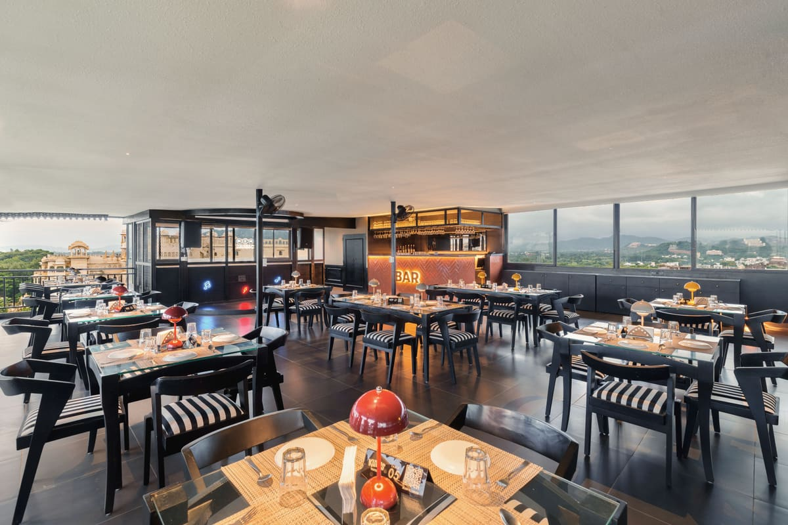
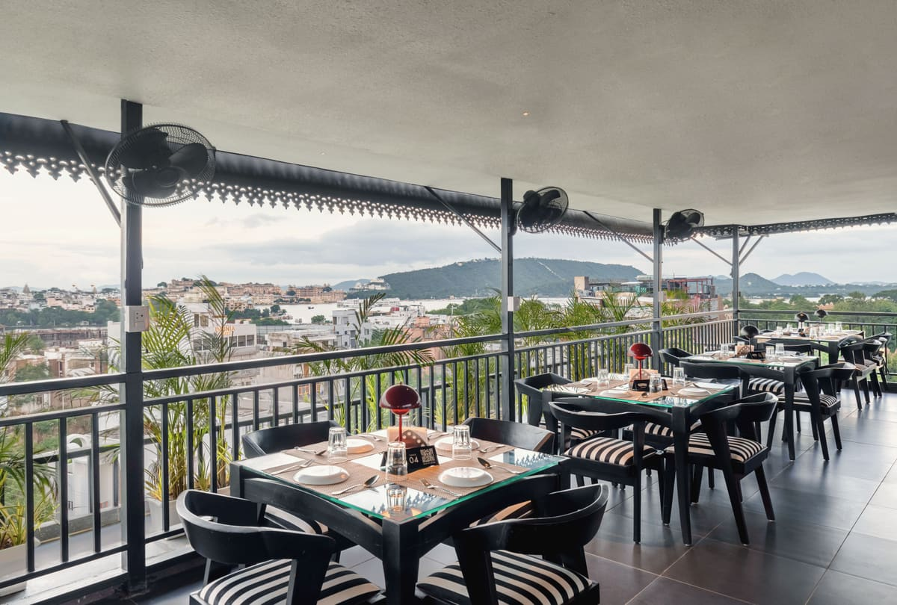
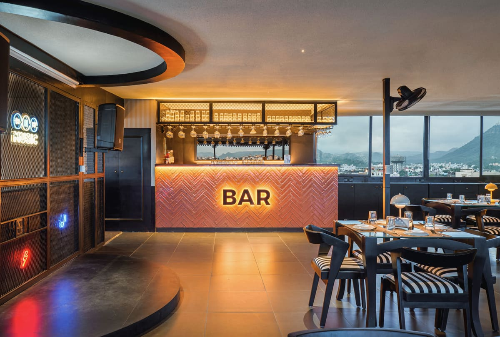
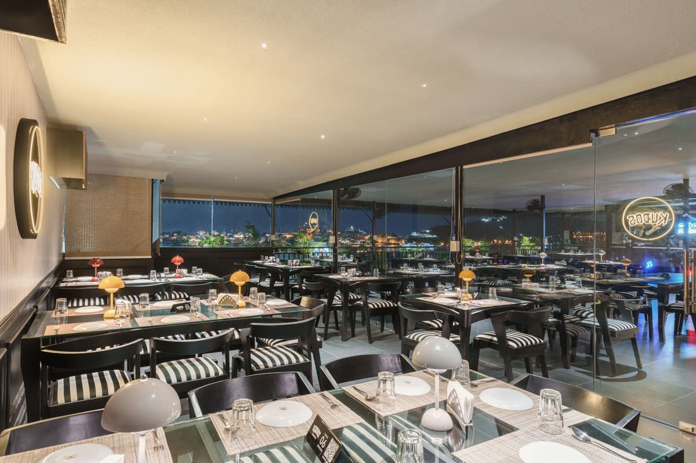
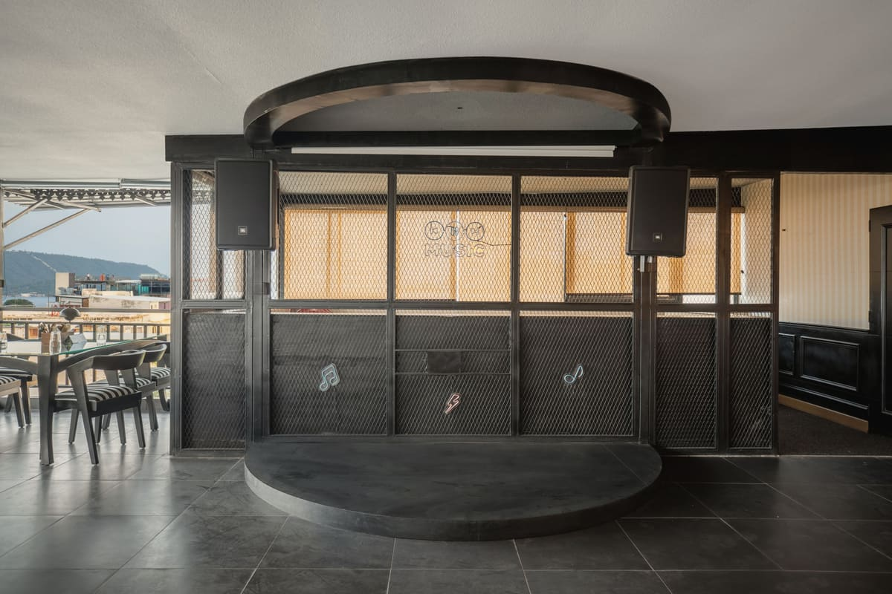

Current Atmosphere
Afternoon
Lake breeze, long lunches and the palace in full daylight.




Rooftop Restro Lounge · Udaipur
360° PanoramaGood food. Great drinks. Panoramic lake vistas. Music that sets the mood.
A covered rooftop above the old city, looking straight across Lake Pichola to the illuminated City Palace. Long breezy lunches, sundowner cocktails as the sun drops, and music until late.
Udaipur Live Time
IST (UTC+5:30)Open Now
Come for the view. Stay for the vibe.
02 — Live Experience
Live in UdaipurCurrent Atmosphere
Afternoon
Lake breeze, long lunches and the palace in full daylight.
Music & Energy
Just the roof
Nothing ticketed tonight. The playlist, the lake and a table with your name on it.
View upcoming nightsGolden Hour Sunset
—
Today's sunset over Lake Pichola & the Aravalli hills, calculated for this rooftop.
03 — The food
A menu doesn't need fifty ingredients in every dish. A plate doesn't need an architectural presentation.
Rajasthani heat from the handi and the tandoor, a handful of favourites from further away, and one rule in the kitchen: get the basics absolutely right.
Signature Veg Non-veg
Mutton on the bone, chilli-red and slow-cooked the Rajasthani way.
Seekh kebab rolled in naan, still smoking from the coal.
Hand-folded parcels, golden at the pleats, chilli dip on the side.
Spinach koftas with a paneer heart, sunk in silky tomato gravy.
Charred at the edges, onion rings underneath. Eat it with your hands.
Penne in a punchy tomato sauce, black olives, one basil leaf.
Deep-red patties, crisp outside, each finished with a dot of green chutney.
Layers that stretch when you lift them. Bring patience, or a fork.
Baked under molten cheese, nachos standing guard around the bowl.
Two sunny eggs on a spiced tomato gravy. Breakfast, after dark.
The food should do the talking.

04 — The story & heritage
A few years in, Kudos was struggling. The easy move was obvious: pull the shutters down, repaint, relaunch under a new name and hope nobody remembered.
We didn't. We rebuilt in place, slowly, one service at a time, with guests still walking in every evening. New plates went out next to old ones. Some nights you could see the seams.
We chose evolution over disruption, because the people who stayed with us through the awkward months deserved to see where it went. It still isn't finished. Something on the roof, the menu or the playlist keeps getting a little better, and the regulars usually notice first.
Kudos is not just a restaurant that changed. It is a restaurant that continues to evolve.
The best compliment a restaurant can receive is not just a good review. It is seeing the same guests walk through its doors again.
Front-row view over Lake Pichola to the City Palace and Jag Mandir, bathed in Rajasthan's legendary evening light.
Rajasthani slow-cooked handis, coal-fired tandoor, artisanal Italian pastas, and fresh local ingredients every single morning.
A curated progression from chill midday grooves to golden hour downtempo, Saturday DJ socials, and nostalgic vinyl nights.
05 — The hours
Drag through an evening on the roof, 5 PM to 1 AM. The marker shows where Udaipur is right now.

5 PM – 7 PM
The sun begins to settle over Udaipur. The city changes colour. Lake Pichola reflects the evening sky.
Ask for a railing table when you book. Get here half an hour before sunset and order the first round while the palace still holds the light.

7 PM – 10 PM
The music finds its rhythm. The bar becomes more active. Friends gather, couples settle in, conversations grow louder and the energy begins to build.
Around eight the bar hits its stride. Come as a group, order to share, and let somebody else choose the next song.

10 PM – 1 AM
The night belongs to the people.
After ten the city lights do the decorating. The late crowd is locals, birthdays and people who said "one more" an hour ago. Kitchen's last orders 12:30 AM.
One destination. Multiple experiences.
06 — Music & nights
The roof has a stage and a DJ booth, and two regular nights that fill it. Everything else is a good evening that happens without a poster.
Saturdays
The week's fullest night on the roof. Friends arrive in groups, tables get pushed together, and the bar stops being a corner and becomes the centre of the room. Book ahead; Saturday walk-ins after nine are a gamble.
From 8 PM · line-up posted on Instagram
Weekly
Old songs, the ones somebody's parents sang along to in the car. By the second verse the whole roof knows the chorus, including the people who swore they didn't.
Night and start time to confirm

Lakeside terrace, ambient lighting & dining spaces
Every table has a view.
Lake Pichola breeze by day, glowing City Palace lights by night. Reserve your preferred corner.
Reserve on WhatsApp07 — Visit & reserve
Simple reservations with personal confirmation.
Pick your preferred slot below and reserve directly on WhatsApp. Need special rooftop arrangements or large family seating? Message or call our host.
Find us in Udaipur
Top Floor, 57 Ambavgarh, near Lake Pichola, Udaipur 313001
Guest Information
Location & Address
Top floor, 57 Ambavgarh, Udaipur
We're on the roof, so look up, not around. Tell the auto driver Ambavgarh, near Lake Pichola and you'll land at the door. The view across Lake Pichola to the City Palace starts the moment you reach the top.
Getting here & parking
Street parking nearby; designated lots available
Old-city lanes are narrow and get narrower after dark. An auto or cab to the door is the stress-free option. If you're driving, park first and walk the last few minutes.
Hours & Kitchen Last Orders
| Every day | 12:00 PM – 1:00 AM |
|---|
Lunch from noon, golden hour around sunset, and the roof stays open until late. Kitchen last orders 12:30 AM.
Best table for sunset
The railing tables facing the lake
Ask for it by name when you book; it goes first. Sunset today is at —, so aim to be seated thirty minutes before.
Rain & monsoon weather
Covered roof and an enclosed glass room
The terrace sits under a canopy and the glass room is fully enclosed, so rain changes the view, not the plan. On properly stormy nights we'll move you inside before you have to ask.
Groups & Celebrations
Up to 40 seated; larger by arrangement
Birthdays, anniversaries, the office dinner nobody wanted to organise. Message us the date and the headcount and we'll come back with a layout and a menu.
Dress code
Smart casual
Nobody's checking collars. It's a nice room with a nice view; most people dress for it, especially on Saturdays.
Family & Children
Welcome for lunch and early dinner
Families do well at lunch and through golden hour. After ten the music is louder and the roof leans grown-up, so plan the early slot if you're bringing little ones.
Vegetarian & Jain Friendly
Separate veg preparation; Jain on request
Vegetarian isn't an afterthought here: half the dishes on this page are veg, the Sham Savera and the lasagna included.
Reservation Lead Time
Same day on weeknights; 1–2 days for Saturdays
Weeknights, a few hours ahead usually works. Saturdays, sunset tables and groups go first, so book those a day or two out.